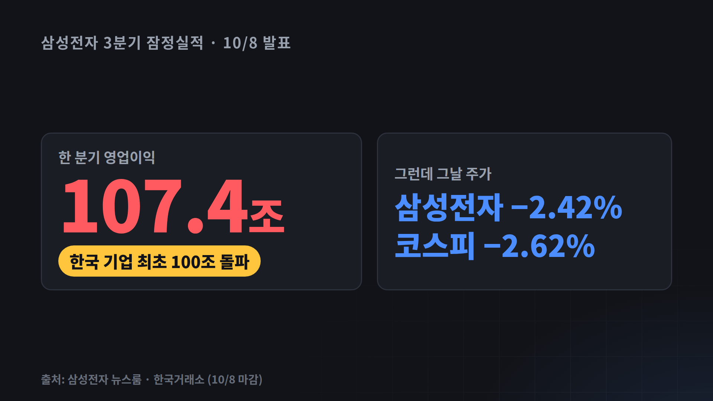
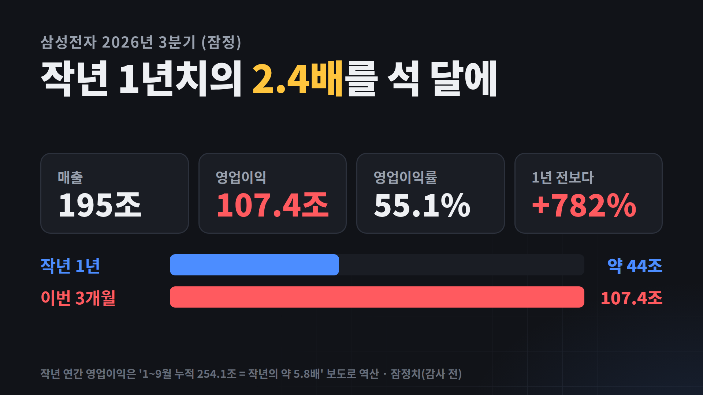
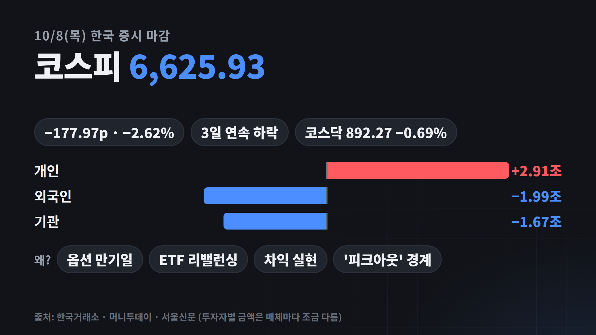
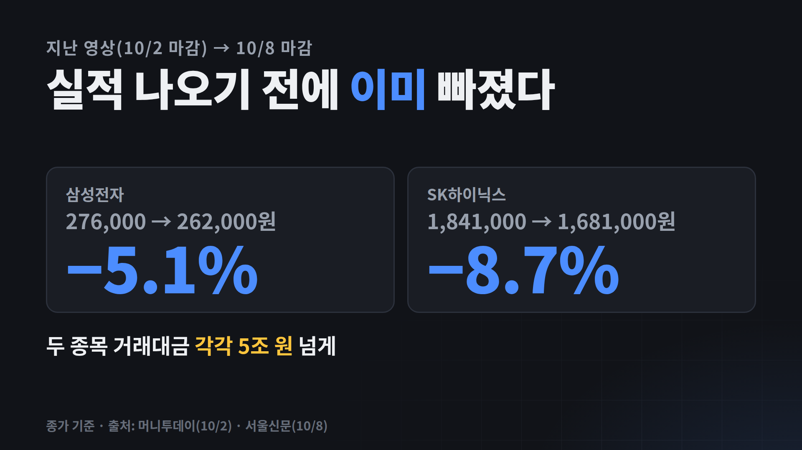
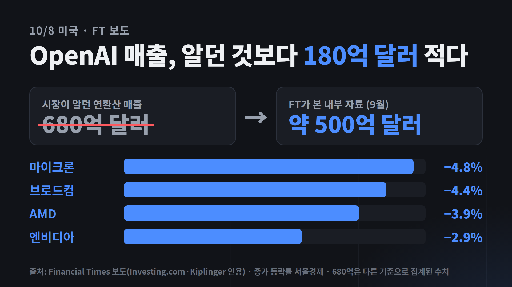
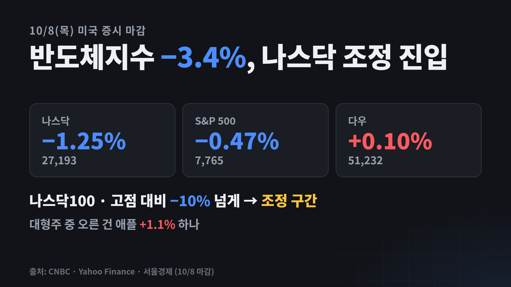
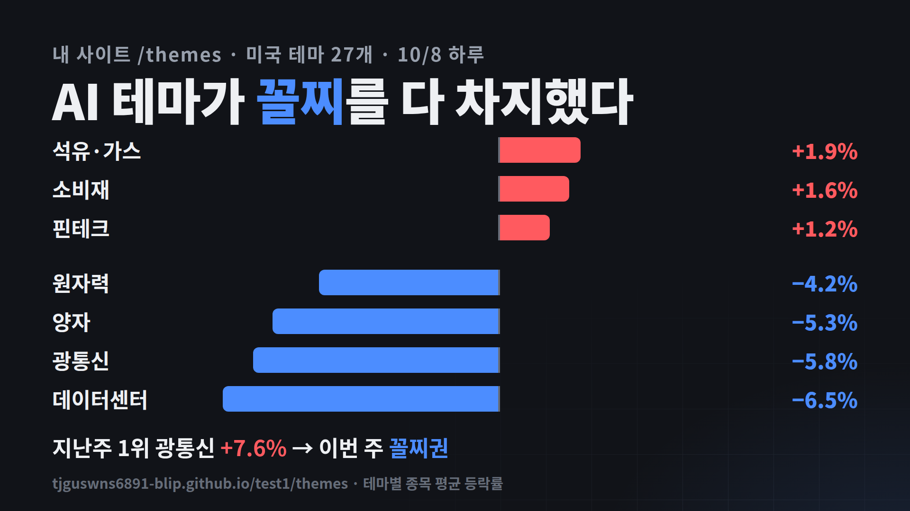
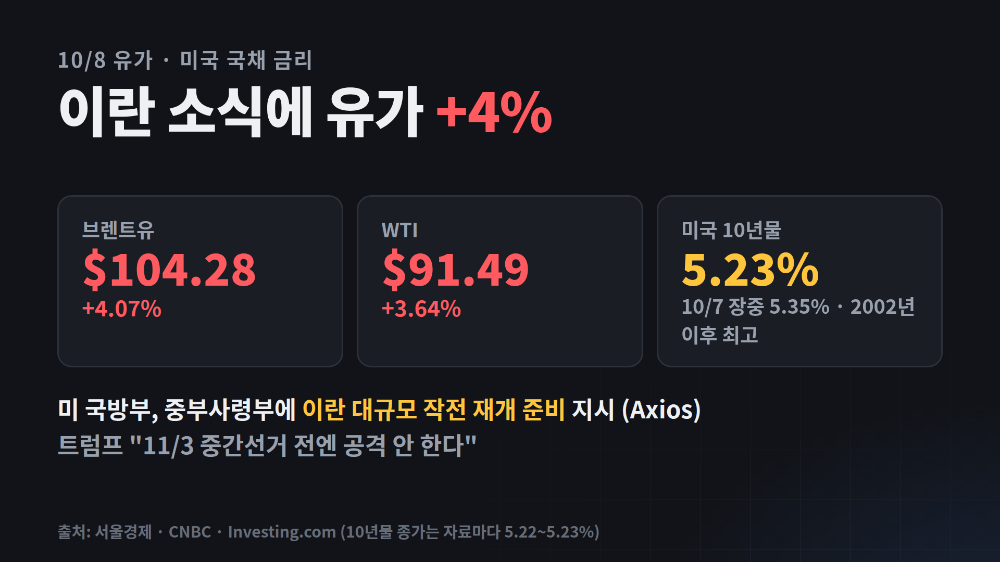
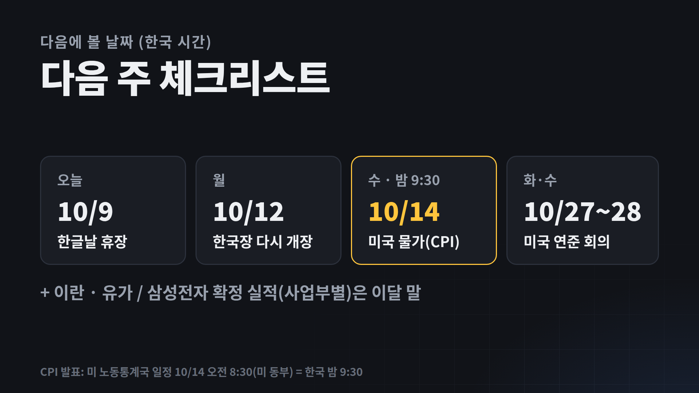
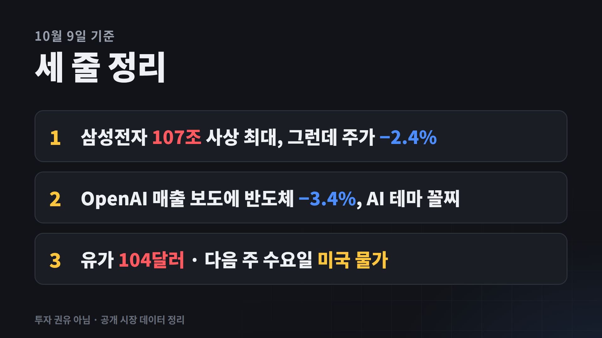

삼성전자 107조 벌었는데 주가는 왜 빠졌을까 OpenAI 숫자 하나에 반도체 −3.4% · 유가 104달러
기준: 한국 2026년 10월 8일(목) 마감 · 미국 10월 8일(목) 마감 · 오늘 10/9(금)은 한글날 휴장. 굵은 노란 글씨는 힘줘서 읽을 숫자, / 표시는 잠깐 쉬는 곳이에요. 이번 대본은 "정보만"이 아니라 "제가 본 것·제 생각"을 한 줄씩 붙였어요(노하우텔링). 장면마다 아래 모션 카드(mp4)가 얼굴 옆에 들어가요.
강조해서 읽기상승·좋음하락·나쁨연출(읽지 않음)
장면 1
오프닝 훅
0:00–0:20
카메라 정면. "그런데"에서 한 박자 쉬기.
삼성전자가 석 달 동안 107조를 벌었어요. / 한국 기업 중에 처음으로 한 분기 100조를 넘긴 거예요.
그런데 저는 그날 주가 화면 보고 / 눈을 의심했어요.
삼성전자 −2.4%, / 코스피 −2.6%.
사상 최대 실적에 왜 빠졌는지, / 제가 만든 주식 사이트 데이터까지 같이 보면서 정리해 볼게요.

m01-hook.mp4
편집 · m01-hook: 107.4조 카운트업 → "한국 기업 최초" 칩 → 오른쪽 "그런데 그날 주가" 파랑. 효과음: 첫 문장 whoosh · "그런데" ding.
장면 2
인사 · 기준 시점
0:20–0:30
안녕하세요, (채널명)입니다.
오늘 10월 9일은 한글날이라 한국장은 쉬어요. / 그래서 한국과 미국 모두 10월 8일 목요일 마감 기준으로 볼게요.
편집 · 하단 고정 자막 "한국·미국 10/8(목) 마감 · 10/9 한글날 휴장".
장면 3
삼성전자 3분기 · 107조
0:30–1:10
숫자 네 개(195조, 107조, 55%, 782%)만 또박또박. 마지막 비교에서 힘주기.
먼저 실적부터요. / 지난 영상에서 "목요일에 나온다"고 말씀드린 그 숫자예요.
매출 195조, / 영업이익 107조 4천억.
100원 팔면 55원이 남는 장사예요. / 1년 전 같은 분기보다는 782%, / 거의 9배예요.
제가 제일 놀란 건 이 비교였어요. / 올해 1월부터 9월까지 번 돈이 / 작년 1년 치의 5.8배래요.
거꾸로 계산해 보면 / 이번 석 달 동안 작년 1년 치의 2.4배를 번 거예요.
다만 이건 잠정 실적이라 / 반도체, 휴대폰처럼 사업부별 숫자는 / 이달 말 확정 실적에서 나와요.

m02-samsung.mp4
편집 · m02-samsung: 4칸 숫자 카운트업 → "작년 1년(약 44조) vs 이번 3개월(107.4조)" 막대. 효과음: "2.4배" pop.
장면 4
그런데 코스피 −2.6%
1:10–1:55
그런데 같은 날 코스피는 / 177포인트, 2.62% 빠진 6,625로 끝났어요. / 사흘 연속 하락이에요.
누가 팔았냐면, / 외국인이 2조 원 가까이, / 기관이 1조 7천억 팔았고, / 개인이 2조 9천억을 받아 냈어요.
기사들이 꼽은 이유는 네 가지예요. / 이날이 옵션 만기일이었고, / ETF 리밸런싱, / 차익 실현, / 그리고 "지금이 꼭대기 아니냐"는 피크아웃 걱정.

m03-kospi.mp4
편집 · m03-kospi: 6,803.90 → 6,625.93 카운트다운, 투자자별 좌우 막대, 이유 칩 4개. 효과음: 문장 시작 swoosh(주제 전환).
장면 5
제 생각 · 이미 가격에 있었다
1:55–2:30
여기는 "제 생각" 파트. 조금 천천히.
저는 지난 영상 이후 주가를 다시 봤는데요.
10월 2일에 27만 6천 원이던 삼성전자가 / 8일엔 26만 2천 원, 5.1% 빠졌어요. / SK하이닉스는 같은 기간 8.7%.
실적이 나오기 전부터 이미 빠지고 있었던 거죠.
제가 느낀 건, / 107조라는 숫자는 놀라웠지만 / 시장은 그 정도는 이미 알고 있었다는 거예요. / 좋은 숫자보다 "다음 분기에도 더 좋을까"를 보고 있는 거죠.

m04-week.mp4
편집 · m04-week: 두 종목 10/2 → 10/8 등락. 효과음: "전부터" pop.
장면 6
미국 · OpenAI 숫자 하나
2:30–3:10
그리고 같은 날 밤, 미국에서 / 반도체를 한 번 더 흔든 뉴스가 나왔어요.
파이낸셜타임스가 / OpenAI의 1년 치 환산 매출이 약 500억 달러라고 보도했어요. / 시장이 알던 숫자는 680억 달러, / 180억 달러가 모자란 거예요.
AI에 돈을 쏟아붓는 회사들이 / 그만큼 돈을 벌 수 있냐는 질문이 다시 나온 거죠.
필라델피아 반도체지수 −3.4%, / 마이크론 −4.8%, 엔비디아 −2.9%. / 미국에 상장된 SK하이닉스도 4% 넘게 빠졌어요.
나스닥은 −1.25%, / S&P 500은 −0.47%, / 다우만 +0.1%로 버텼고요. / 나스닥100은 고점 대비 10% 넘게 빠져서 / 조정 구간에 들어갔어요.

m05-openai.mp4

m06-us.mp4
편집 · m05-openai(680억 취소선 → 500억, 반도체 막대) → m06-us(3대 지수). 효과음: "그리고 같은 날 밤" swoosh · "180억 달러" pop.
장면 7
내 사이트 · 테마 순위
3:10–3:45
사이트 /themes 화면 녹화(1일 탭 → 1주 탭)로 넘어가도 좋아요.
제가 이 사이트를 만든 이유가 / 딱 이런 날 때문이에요. / 뉴스 한 줄보다, 돈이 어디서 빠지는지 한눈에 보고 싶어서요.
미국 테마 27개를 하루 등락으로 줄 세워 보면, / 꼴찌가 데이터센터 −6.5%, / 광통신 −5.8%, / 양자 −5.3%, / 원자력 −4.2%.
전부 AI랑 엮인 테마예요.
반대로 위쪽은 석유·가스 +1.9%, 소비재, 핀테크. / 지난주 영상에서 1위였던 광통신 +7.6%가 / 일주일 만에 꼴찌권으로 내려왔어요.

m07-themes.mp4
편집 · m07-themes: 좌우 막대(상위 3 · 하위 4). 사이트 링크 하단 고정. 효과음: "꼴찌가" pop.
장면 8
유가 104달러 · 금리
3:45–4:10
석유가 오른 이유도 있어요. / 미국 국방부가 중부사령부에 / 이란 작전을 다시 준비하라고 지시했다는 보도가 나왔거든요.
브렌트유가 하루에 4% 올라 104달러. / 트럼프 대통령은 "11월 3일 중간선거 전엔 공격 안 한다"고 했지만요.
미국 10년물 금리도 5.23%. / 하루 전엔 장중 5.35%로 2002년 이후 제일 높았어요. / 유가와 금리, 둘 다 주식엔 부담이에요.

m08-oil.mp4
편집 · m08-oil. 효과음: 문장 시작 swoosh · "104달러" pop.
장면 9
다음 주에 볼 것
4:10–4:25
다음 주에 볼 날짜예요.
한국장은 12일 월요일에 다시 열리고, / 14일 수요일 밤 9시 반에 미국 9월 물가가 나와요.
그리고 27일, 28일 연준 회의. / 물가가 높게 나오면 / 금리 걱정이 다시 커질 수 있어요.

m09-next.mp4
편집 · m09-next 달력. 효과음: "다음 주에 볼 날짜" click(목록 시작).
장면 10
세 줄 정리 · 클로징
4:25–4:45
정리할게요.
하나, 삼성전자 107조 사상 최대, / 그런데 주가는 이미 기대를 반영해서 빠졌어요.
둘, OpenAI 매출 보도에 / 반도체 −3.4%, AI 테마가 꼴찌.
셋, 유가 104달러, / 다음 주 수요일 미국 물가.
이 영상은 투자 권유가 아니라, / 공개된 시장 숫자를 정리한 정보예요. / 투자 판단과 책임은 본인에게 있습니다.
107조, 여러분은 꼭대기라고 보세요, / 아니면 이제 시작이라고 보세요? / 댓글에 "꼭대기" 아니면 "시작"으로 남겨 주세요. / 제가 보는 테마 순위 사이트 링크는 설명란 맨 위에 있어요.

m10-summary.mp4
편집 · m10-summary → 인물. 하단 고정 자막 "투자 권유 아님 · 공개 시장 데이터 정리". 효과음: 마지막 댓글 유도 ding.
쇼츠 A
107조 벌었는데 주가는 −2.4%
약 30초
삼성전자가 석 달 동안 107조를 벌었어요. / 작년 1년 치의 2.4배예요.
그런데 그날 주가는 −2.4%.
제가 일주일 치를 다시 봤더니, / 실적 나오기 전부터 이미 5% 빠지고 있었어요.
시장은 107조가 아니라 / "다음에도 더 좋을까"를 보고 있는 거예요. / 여러분은 꼭대기, 시작? 댓글로요.
편집 · 9:16, 가운데 칸에 m01-hook → m04-week. 효과음: whoosh · "그런데" ding · "5%" pop · 마지막 ding.
쇼츠 B
숫자 하나에 반도체 −3.4%
약 25초
OpenAI 매출이 알려진 것보다 / 180억 달러 적대요.
시장이 알던 건 680억 달러, / 파이낸셜타임스가 본 자료는 약 500억 달러.
이 숫자 하나에 반도체지수 −3.4%, / 마이크론 −4.8%, / 나스닥100은 고점 대비 −10% 조정 진입.
편집 · 9:16, m05-openai. 효과음: whoosh · "약 500억" pop · "−10%" pop.
쇼츠 C
제가 만든 사이트로 본 AI 테마 꼴찌
약 25초
제가 만든 미국 테마 순위 사이트예요.
어제 꼴찌가 데이터센터 −6.5%, / 광통신, 양자, 원자력. / 전부 AI 테마예요.
광통신은 지난주 1위였는데 / 일주일 만에 꼴찌권.
돈은 석유·가스로 갔어요. / 링크는 프로필에 있어요.
편집 · 9:16, 사이트 /themes 녹화 또는 m07-themes. 효과음: whoosh · "꼴찌가" pop · "1위" ding.
모션 그래픽 (motion/motion.html → img/*.mp4)
카드 10개, 1920×1080 · 30fps · 각 7~9초. 숫자 카운트업, 막대 자라기, 취소선, 칩이 순서대로 떠오름. 마지막 화면은 같은 이름 PNG.
다시 만들기: cd youtube/1009/motion && NODE_PATH=…/node_modules FFMPEG=ffmpeg node render.js [카드,…] · 미리보기: motion.html?play
편집 때 얼굴 옆 칸에 mp4로 넣고, 말보다 짧으면 마지막 화면에서 멈춤.
대본에 쓴 숫자와 출처
항목
값
출처
삼성전자 3분기 잠정 (10/8)
매출 195조 · 영업이익 107.4조(국내 기업 최초 분기 100조) · 이익률 55.1% · 전년 동기 대비 +782.5% · 1~9월 누적 254.1조(작년 연간의 약 5.8배 → 작년 약 44조로 역산)